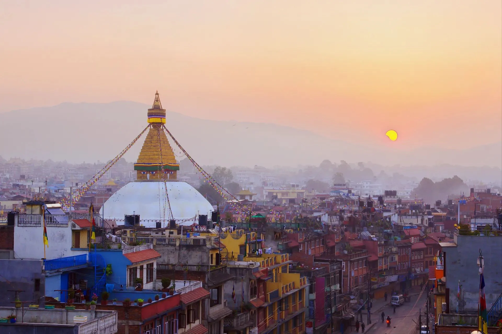

АКТУЕЛНА ПОНУДА

КАТМАНДУ И ХИМАЛАИТЕ
Катманду, Непал
07.08 - 16.08
Откријте ја магичната земја на Непал и величествените Хималаи. Истражете го историскиот Катманду, древните храмови и традиционалните улици, а потоа уживајте во неверојатните планински пејзажи. Патувањето е совршено за љубителите на природа, култура и незаборавни планински авантури.
ХИМАЛАЈСКА АВАНТУРА
Главниот и најголем град на Непал, сместен во истоимената долина и познат како културно, историско и духовно срце на земјата. Градот е препознатлив по своите древни храмови, будистички ступи, историски плоштади и традиционални пазари. Меѓу најзначајните места се плоштадот Дурбар, храмот Свајамбунат, познат како „Храмот на мајмуните“, ступата Боднат и храмот Пашупатинат. Катманду нуди уникатна комбинација од древна архитектура, духовна традиција и живописна локална атмосфера.
Еден од највпечатливите планински предели во светот и природен симбол на Непал. Хималаите се познати по своите високи снежни врвови, длабоки долини и спектакуларни планински пејзажи. Панорамските тури овозможуваат прекрасни погледи кон планинските масиви и, во зависност од временските услови, кон најпознатите врвови во регионот. Посетата е идеална за фотографирање, прошетки и уживање во чистата планинска природа и величествените пејзажи.
Еден од најубавите и најпопуларните туристички градови во Непал, познат по својата прекрасна природна околина и погледите кон Хималаите. Градот е сместен покрај езерото Пхева, каде крајбрежјето е исполнето со кафулиња, ресторани и места за релаксација. Во околината се наоѓаат природни атракции како Девис Фол и пештерата Гуптешвор Махадев, додека планинските панорами создаваат впечатлива атмосфера. Покхара е идеална комбинација од езеро, планини, природа и авантуристички туризам.
Позната област во јужниот дел на Непал и дом на Националниот парк Читван, еден од најзначајните природни резервати во земјата. Паркот е познат по богатата флора и фауна и можноста за набљудување на диви животни во нивната природна средина. Во зависност од условите, посетителите можат да забележат еднорог носорог, елени, мајмуни, крокодили и голем број различни видови птици. Читван нуди поинакво лице на Непал, со тропски предели, густи шуми и авантуристички активности во природата.
Живописно планинско место во близина на Катманду, познато како една од најубавите панорамски точки во Непал. Нагаркот е особено популарен поради прекрасните погледи кон Хималаите и околните планински предели. Во ведри денови, од областа може да се ужива во широки планински панорами, а изгрејсонцето и зајдисонцето создаваат особено впечатливи пејзажи. Местото е идеално за одмор, прошетки, фотографирање и уживање во мирната планинска атмосфера.
Состанок со групата на аеродром во Скопје, 2 часа пред летот. Следува диретен лет до Истамбул, па диретен лет кон Катманду и пристигнување на аеродром. По завршувањето на аеродромските процедури следува организиран трансфер до хотелот и сместување. По сместувањето следува време за одмор и освежување. Попладнето е предвидено за прва прошетка низ околината и запознавање со градот. Вечерта е слободна за вечера и индивидуални активности. Ноќевање во хотел.
Појадок во хотелот и организирано разгледување на Катманду. Следува посета на плоштадот Дурбар, старите градски улици и традиционалните пазари. Програмата продолжува со слободно време за фотографирање, ручек и индивидуално разгледување. Попладнето е предвидено за прошетка низ туристичкиот дел на градот. Вечерта е слободна за одмор и вечера. Ноќевање во хотел.
Појадок и организирана посета на најзначајните духовни места во Катманду. Следува посета на храмот Свајамбунат, познат како „Храмот на мајмуните“, и будистичката ступа Боднат. Програмата продолжува со посета на хиндуистичкиот храм Пашупатинат. Потоа следува слободно време за фотографирање и индивидуално истражување. Вечерта е слободна. Ноќевање во хотел.
Рано наутро следува организирано тргнување кон планинските предели во близина на Катманду. Предвидена е панорамска тура со погледи кон Хималаите и околните планински врвови. Патниците ќе имаат време за прошетка, фотографирање и уживање во природата. По посетата следува враќање во Катманду. Вечерта е слободна за одмор. Ноќевање во хотел.
Појадок и организирано заминување кон Покхара. По пристигнувањето следува сместување и прошетка покрај езерото Пхева. Патниците ќе имаат слободно време за кафе, ручек, фотографирање и уживање покрај езерото. Попладнето продолжува со прошетка низ Lakeside и запознавање со атмосферата на градот. Вечерта е слободна. Ноќевање во хотел.
Појадок и организирано разгледување на Покхара и околината. Следува посета на Девис Фол и пештерата Гуптешвор Махадев. Програмата продолжува со панорамски погледи кон планините и слободно време покрај езерото Пхева. Патниците ќе имаат можност за ручек, кафе и индивидуално разгледување. Вечерта е слободна за одмор. Ноќевање во хотел.
Појадок и организирано заминување кон Националниот парк Читван. По пристигнувањето следува сместување и запознавање со околината. Предвидена е организирана активност во природата со можност за набљудување на носорози, елени и различни видови птици. Потоа следува слободно време за одмор и уживање во природата. Вечерта е слободна. Ноќевање во хотел.
Појадок и организирано враќање кон долината на Катманду со посета на Нагаркот. Местото е познато по панорамските погледи кон Хималаите и прекрасните планински предели. Следува време за прошетка, фотографирање и уживање во природата. Потоа продолжувањето кон Катманду и сместување во хотел. Вечерта е слободна за одмор и индивидуални активности. Ноќевање во хотел.
Појадок во хотелот и слободен ден за индивидуално истражување на Катманду. Патниците можат да го искористат денот за шопинг, прошетка низ Тамел, купување сувенири и дегустација на локалната кујна. Предвидено е време и за последни фотографии и индивидуални активности. Вечерта е слободна за вечера и одмор. Ноќевање во хотел.
Појадок во хотелот и одјавување согласно предвиденото време. По собирањето на багажот следува организиран трансфер до аеродромот во Катманду. По пристигнувањето следува пријавување за летот и завршување на потребните аеродромски процедури. Потоа следи диретен лет до Истамбул , па директен лет до Скопје. По пристигнувањето и преземањето на багажот завршува организираното патување.